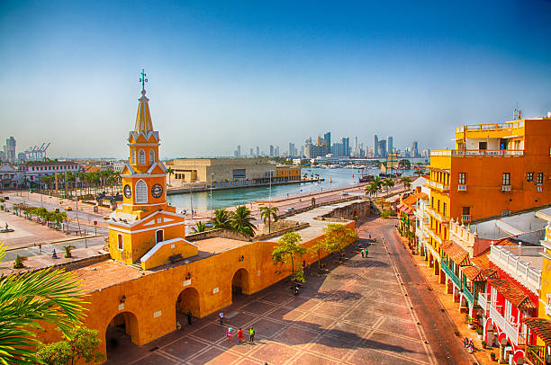
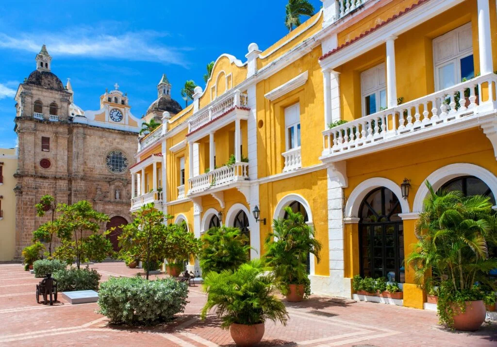

Cartagena de India: es una ciudad que está ubicada a orillas del Mar Caribe. Sus calles coloridas llenas de encanto la hacen la puerta de entrada a Suramérica. En Colombia, se encuentra al norte del país, y es la capital de la región de Bolívar.
‘La Heroica’, como la llaman, contempla a su alrededor varios archipiélagos e islas que son paraísos para un verdadero descanso.Cartagena, suma a sus encantos los atractivos de una intensa vida nocturna, festivales culturales y paisajes exuberantes.
Las playas de la ciudad te invitan a hacer turismo, descansar y divertirte con la refrescante brisa y las tibias aguas del mar. De la misma manera, El tiempo en Cartagena de Indias es muy agradable, pues su clima tropical te permitirá gozar de sus playas y otros encantos. La temperatura en Cartagena durante todo el año es de 27°C en promedio. Un clima ideal para conocer la ciudad amurallada, los restaurantes, entre otros lugares emblemáticos de ‘La Heroica’.
Te gustaria conocer la historia de la ciudad y todo sobre ellas lo podras ver dando clic Aquí si deseas ver mas imagenes Haz clic Aquí y si te animas a viajar y conozer Haz clic Aquí
 Я кохаю тебе, коханий мій.>
Я кохаю тебе, коханий мій.>